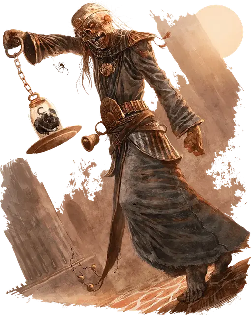

Несущий чёрную розу
Black Rose Bearer
Средняя Нежить, обычно нейтрально-злая

Класс Доспеха 11 (природный доспех)
Хиты 110 (13к8 + 52)
Скорость 20 футов
| мод | спас | ||
|---|---|---|---|
| СИЛ | 17 | +3 | +3 |
| ЛОВ | 6 | −2 | −2 |
| ТЕЛ | 18 | +4 | +4 |
| мод | спас | ||
|---|---|---|---|
| ИНТ | 2 | −4 | −4 |
| МДР | 10 | +0 | +0 |
| ХАР | 5 | −3 | −3 |
Иммунитет к урону яд
Иммунитет к состояниям испуг, истощение, отравление, очарование
Чувства тёмное зрение 60 футов, пассивное Восприятие 10
Языки понимает все языки, которые знал при жизни
Опасность 6 (2300 опыта)
Бонус мастерства +3
Особенности
Берсерк. Каждый раз, когда несущий получает урон или совершает спасбросок Силы или Ловкости, совершите бросок 1к6. При выпавших значениях «5» или «6», несущий становится берсерком. До тех пор, пока он в таком состоянии, несущий совершает с преимуществом броски атак рукопашным оружием , может бонусным действием совершать действие Рывок, а также должен атаковать ближайшее видимое существо. Если в пределах его перемещения нет существ, то несущий атакует объект, отдавая предпочтение тем целям, которые меньше него. Став берсерком, несущий остаётся им, пока его не уничтожат или пока его создатель не вручит ему неповреждённую чёрную розу.
Стойкость нежити. Если урон опускает хиты несущего до 0, он совершает спасбросок Телосложения Сл 5 + полученный урон, если только это не был урон излучением или урон от критического попадания. При успехе хиты несущего опускаются до 1.
Действия
Мультиатака. Несущий совершает две атаки Размашистым ударом.
Размашистый удар. Рукопашная атака оружием: +6 к попаданию, досягаемость 5 футов, одна цель. Попадание: 12 (2к8 + 3) дробящего урона плюс 11 (2к10) урона некротической энергией.
Описание
«Их существование — насмешка над живыми. Их розы — насмешка над рыцарями. Уничтожайте несущих сразу, как увидите. Не терпите их присутствия.»
— Распространённая поговорка среди соламнийских рыцарей.
Несущий черную розу является гниющий трупом, оживленным некромантами Кринна в качестве стража. Его название происходит от сохранившейся черной розы, которую владелец носит в изящном реликварии. Малейший толчок может привести к тому, что носитель потеряет равновесие, разрушив банку и цветок внутри.
Обычно несущий черную розу медлителен и спокоен. Он следует приказам своего создателя и вяло атакует противников. Однако если его розу потревожить, то несущий преисполнится яростным насилием, нападая без разбора.
Несущий чёрную розу — это дань уважения тираническому лорду Соту, самому могущественному рыцарю смерти на Кринне, который когда-то был соламническим рыцарем Ордена Розы.